Modeling Preferential Flow through Unsaturated Soil using the 1-D Dual Porosity Approach
View code on Github
This model, written in Python, expands upon the Richards Equation for the movement of water through unsaturated soils to include preferential flow. Preferential flow occurs when there are cracks or holes in the soil due to, for example, plowing that breaks up aggregates, roots, or wormholes, allowing uneven movement of water through porous media like soils (Cornell University, 2021). The cracks and holes allow for faster water flow than the bulk of the soil. These areas also allow for deeper penetration of water, which could have implications for groundwater quality (Cornell University, 2021).
The code extends the Richards equation to model two fractions in the soil: 1. Fast flow zone, and 2. Slow flow zone. The total flow through porous soil media is determined by the flow in these two domains, modeled using a staggered grid scheme. In this way, the dual porosity concept was implemented where the fast and slow flow zones are described separately; this is appropriate as these zones could have different soil properties. The model couples the preferential flow and unsaturated flow processes to investigate how water flows through porous media under various conditions using different scenarios.
Theory and Basic Equations
Darcy's Law
Concepts that drive the rate of water flow through porous media, such as capillary pressure, hydraulic head and fluid potential, are related to the energy gradient in Darcy’s Law (Pinder and Celia, 2006). The model uses the extended form of Darcy’s law for groundwater flow, as it describes the simultaneous flow of non-homogeneous phases (Mayer, 2005). The modeled system has non-homogeneous phases because it is a porous medium where two immiscible phases are present; this is needed to create capillary pressure that retains water (Mayer, 2005). The extended form of Darcy’s equation is:
$$q_{\alpha} = \frac{\textbf{k}k_{r\alpha}}{\mu_{\alpha}}(\mathbf{\nabla}p_{\alpha}-\rho_{\alpha}\textbf{g})$$
where \(q_{\alpha}\) is the water discharge rate in \(\frac{L^2}{T}\), \(\textbf{k}\) is the permeability in \(L^2\), \(k_{r\alpha}\) is the relative permeability (dimensionless), \(\mu_{\alpha}\) is the dynamic viscosity in Pascals \(\cdot\) T, \((\mathbf{\nabla}p_{\alpha}-\rho_{\alpha}\textbf{g})\) is the pressure gradient. Note that L indicates a length-based unit like meters and T indicates a time-based unit like seconds.
Effective Saturation, Van Genuchten, and Relative Permeability
The Van Genuchten and effective saturation equations are needed to calculate the relative permeability, \(k_{r\alpha}\). The Van Genuchten equation models the soil's water retention by relating the water content to the soil’s empirical parameters (Mayer, 2005; Pinder and Celia, 2006).
$$\text{if } h_c > 0 \text{, } S_{\text{eff}}(h_c) = [1 + (\alpha h_c)^n]^{-m}$$
$$\text{if } h_c \leq 0 \text{, } S_{\text{eff}}(h_c) = 1$$
where \(\alpha\) is an empirical parameter of the soil in \(L^{-1}\) which is the point on the water retention curve where \(S_{eff}=0\). \(h_{c}\) is the capillary pressure head in length-based unit. \(n\) and \(m\) are empirical soil parameters where \(n=\frac{1}{1-m}\) and \(m=1-(\frac{1}{n})\) (Mayer, 2005). With \(S_{eff}\) known using the equation above, the volumetric water content, \(\theta_{w}\) \((L^3 L^{-3})\), can be calculated via the effective saturation equation as shown in the following equation.
$$S_{eff} = \frac{\theta_{w}-\theta_{res}}{\theta_{sat}-\theta_{res}}$$
while the relative permeability can be found by the following equation (Pinder and Celia, 2006)
$$k_{rw} = (S_{eff})^3$$
Richard's Equation
The pressure head form of the Richards Equation is as follows.
$$[C(h_{w}) + S_{w}S^w_{s}]\frac{\delta h_{w}}{\delta t} - \mathbf{\nabla} \cdot [K^w_{sat} k_{rw}(\mathbf{\nabla} h_{w} + \mathbf{\nabla}z)]=0$$
where \(K^w_{sat}\) is the saturated hydraulic conductivity in \(\frac{L}{T}\), \(h_{w}\) is the water pressure head, and \(z\) is the depth. Note that negative \(z\) indicates a direction from top to bottom of the soil column (away from the surface into deeper layers). \(C(h_{w})\) is the differential water capacity which equals \(\frac{\delta \theta_{w}}{\delta h_{w}}\). \(S_{w}\) is known as the water storage which equals \(\frac{\theta_{w}}{\theta_{sat}}\).
\(S^w_{s}\) is the storativity coefficient which is the specific water capacity of the soil, given by the following equation.
$$S^w_{s} = \rho_{w} g (C_v+\epsilon \beta_w)$$
where \(C_v\) is the compressibility of the soil, \(\epsilon\) is the porosity of the soil, \(\beta_w\) is the compressibility of water, \(\rho_w\) is the density of water, and \(g\) is gravitational acceleration.
Dual Porosity Concept
In the dual porosity model, the fast flow fraction can have different soil properties than the slow flow fraction; a Darcy’s Law-based water flow is considered for both porosity systems by using a "first-order coupling term" (Gerke and Van Genuchten, 1993). In this model, the densities of both the solid and liquid phases are constant, and temperature, air pressure, and solute concentration effects are considered to be negligible (Gerke and Van Genuchten, 1993).
The fast and slow flows are modeled based on the extended form of Darcy’s Law.
$$q_{w} = -K_{sat}k_{rel}(\theta_{w}) ({\Delta} h_w+\mathbf{\nabla}z)$$
where \(q_w\), \(K_{sat}\), \(k_{rel}\), and \(h_w\) are unique to the respective fast flow and slow flow domains. The hydraulic conductivity, \(-K_{sat}k_{rel}\), is a function of the water content.
In the model, the flows in both the fast and slow zones are coupled by the exchange for water term \(Q_{exchange}\).
$$Q_{exchange} = -k_{ex}(h_{w,fast}-h_{w,slow})$$
where \(k_{ex}\) is the rate of exchange of water between the two porosities and \(h_w\) is the water pressure head for the fast and slow zones. \(k_{ex}\) is a resistance term and expected to be large if there is a barrier like a worm's slimy paste that keeps the holes in place; this interface presents a higher resistivity. Since it is an empirical parameter, it is determined by trial and error. The \(Q_{exchange}\) term has the same magnitude at all times for both flow zones, but with different signs in each respective soil fraction. The saturated water content is denoted by the following equation.
$$\theta_{sat} = \theta_{sat,fast} + \theta_{sat,slow}$$
where \(\theta_{sat,fast} = \beta \theta_{sat}\) and \(\theta_{sat,slow} = (1-\beta) \theta_{sat}\). \(\beta\) is the fraction of porosity associated with the fast flow.
The water mass balances for both the fast and slow flow zones, respectively, are as follows.
$$\frac{\delta \theta_{w,fast}}{\delta t} + \mathbf{\nabla} \cdot q_{w,fast} + Q_{exchange} =0$$
$$\frac{\delta \theta_{w,slow}}{\delta t} + \mathbf{\nabla} \cdot q_{w,slow} - Q_{exchange} =0$$
If the \(h_{w,fast}\) > \(h_{h,slow}\), then the \(Q_{exchange}\) is negative, indicating that the water flows from the fast flow zone to the slow flow zone.
Methodology
To implement the equations in the model, the following steps were taken. Firstly, both domains were defined to have the same top and boundary conditions and the same number of nodes; the soil column used for both is the same. The flow was assumed to enter through the fast flow zone only. The Richards Equation was modeled with two states with identical soil properties and a \(Q_{exchange}\) of zero to see if the model produced identical results as unsaturated flow, as in this case, there is no exchange between the zones. The model solves both of the states of the two domains in parallel. The fast flow zone is controlled by \(\beta\), with \(\beta \theta_{sat}\) indicating the pore space in the fast flow zone. Then, the parameters were varied to have different soil parameters to study the behavior of the fast and slow flow zones. After that, the exchange term can be also changed to model the preferential flow. From the exchange term, \(Q_{exchange}\), it is evident that the difference between the pressure heads of the fast and slow flow zones and therefore the \(Q_{exchange}\) will dominate the flow process. To see the results of this stepwise expansion of the model, please see the Appendix. The model was then used to run different scenarios to see the effect of preferential flow through unsaturated soils; these scenarios contain different boundary conditions and model parameters to see how the model results change with under varying conditions. The scenarios will be further detailed in an upcoming section.
To model the unsaturated flow, discretization was used in a one-dimensional staggered grid scheme to capture the flow in a continuous way through small time steps and depth increments. The nodes represent the soil layers, and the internodes represent the space between soil layers as shown in Figure 1.
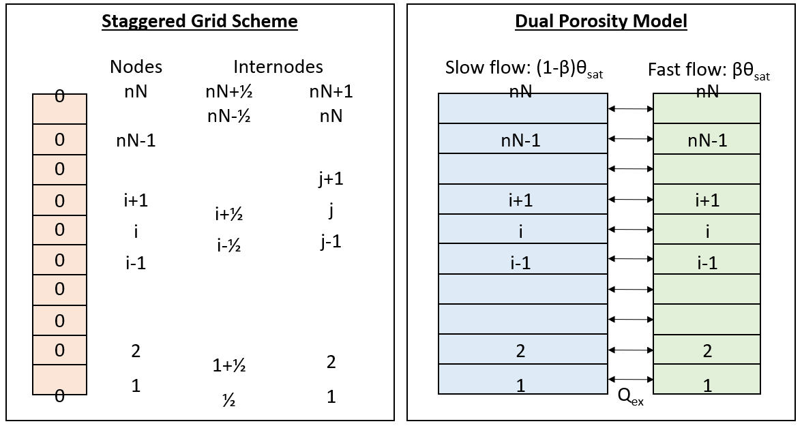The discretization was then done using a Jacobian matrix for the Python ODE solver. To couple the flows, two state variables were used throughout the model functions. The top and bottom boundary conditions depended on the scenario. In the no flow top boundary condition, the flow at the top is zero. In the varying top boundary condition, there is a 0.001 m/day flow for the first 25 days, and then no flow for the next 200 days. In the gravity flow bottom boundary condition, only gravity (a zero pressure head gradient) impacts the bottom boundary. In the Robbin condition at the bottom boundary, the flow is determined by the mixed Robbin condition which is the negative of the Robbin resistance term multiplied by the difference between the water pressure head and the external head of -1m. These values were given as part of the model for unsaturated flow.
Parameter Values and Initial Conditions
The initial conditions were given according to the model for unsaturated flow. The initial soil column length was taken to be one meter and the phreatic water level was 25 centimeters. Therefore, the initial pressure head was determined to be \(h_{w,initial} = zRef - zN\), where \(zRef\) is the depth of the phreatic water table and \(zN\) is the depth. The initial pressure head at the top boundary, \(zRef\), and bottom boundary were -0.25m, 0m, and 0.75m, respectively.
The parameter values used in the model were the soil parameters from Gerke and Van Genuchten (1993). Figure 2 shows the soil parameters used in the Python code, where the fracture and matrix soil parameters were taken to be the fast flow and slow flow fractions, respectively.
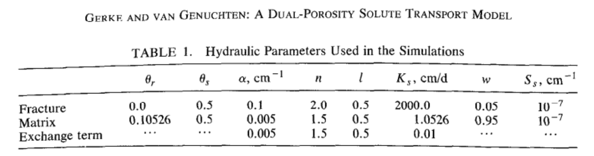These parameters were determined to be the best ones to use after calibrating the model with different soil parameters and testing the sensitivity of changes in soil parameters on the model outcomes. For example, using the sand and silty clay parameters from Mayer (2005) as shown in Figure 13 in the Appendix, the results as shown in Figure 20 were produced. The slow flow soil had a significant negative pressure head. This indicates that the water is draining very quickly out of the slow flow soil column. The flow of water is influenced by hydraulic conductivity. When the hydraulic conductivity in the slow flow fraction was changed to be 0.01 m/day, comparable to the value indicated in Gerke and Van Genuchten (1993), the pressure head in the slow flow fraction was much less negative, which confirms that the hydraulic conductivity influences the flow as shown in Figure 2. A lower permeability means there is slower flow. Then, the sensitivity of the saturated water content was tested by raising it; the results are shown in Figure 2. Again, the pressure head in the slow flow column was much less negative. With a higher saturated water content, the water storage also increases. The higher saturation capacity means that more soil pores are filled with and conducting water; the water does not drain as quickly. Therefore, a higher saturation water content as determined by Gerke and Van Genuchten
Scenarios
Gravity flow bottom boundary and \(k_{ex}=0\)
When \(k_{ex}=0\), there is no exchange between the two soil fractions. In the first 25 days, there is an inflow at the top boundary condition of the fast flow fraction, so the water pressure head steadily decreases during this time. Then, a flow is introduced at the top boundary at Day 25, which recharges the soil column with a steady water flow, bringing the pressure head to a steady level. Meanwhile, as there is no exchange, the slow flow fraction is in hydrostatic conditions because there is no inflow in the slow flow fraction. This is exhibited by the constant pressure change in the vertical direction. Since the flow of water in the slow flow zone is only influenced by the density, gravity, and change in depth under hydrostatic conditions, the pressure head change is only due to the weight of the fluid as it trickles down the slow flow column. The inflow in the fast flow column is too slow to sustain the water content, so at the end of the model run, it drops to the residual water content. In the slow flow zone, it does not reach the residual water content as the water content barely changes with respect to depth. From the graphs, it is clear that the water enters through the fast flow domain and flows faster through the fast flow soil fraction than the slow flow fraction.
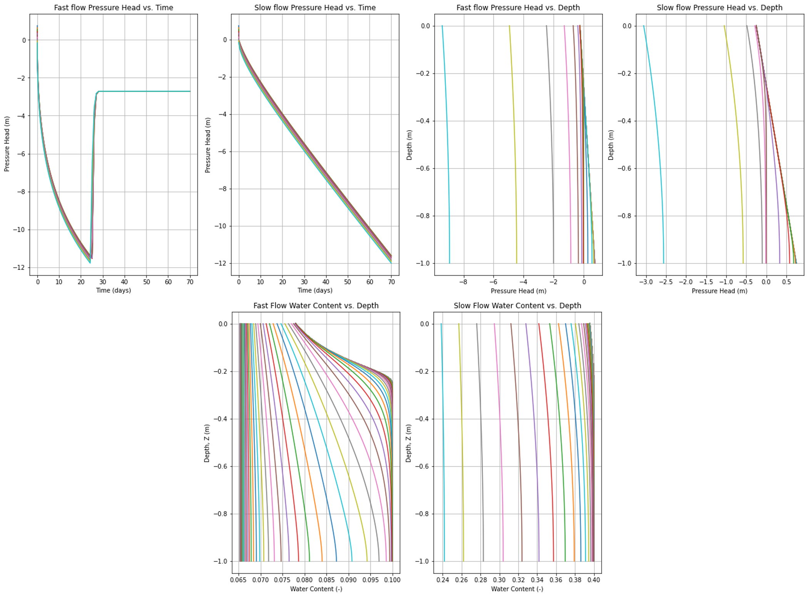Robbin bottom boundary and \(k_{ex}=0\)
This scenario is similar to that of the foregoing section, except that the bottom boundary is now a Robbin boundary.
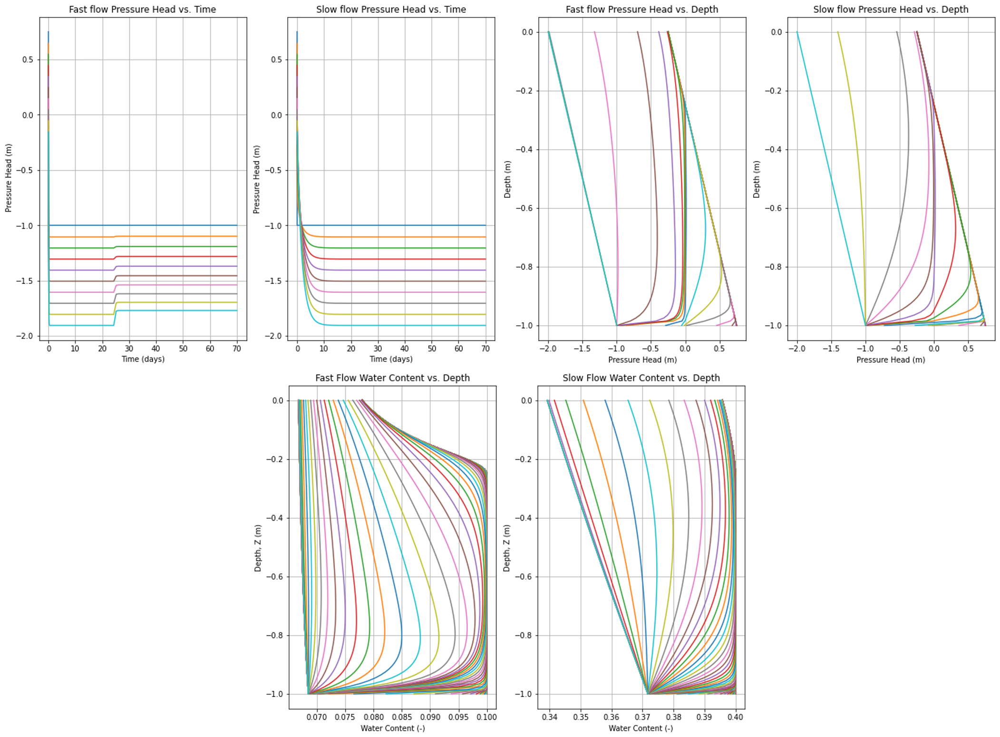With the Robbin condition at the bottom boundary, there is an external head that limits the drop in pressure head; the lowest pressure head in both columns is greater than the lowest pressure head in the preceding scenario. For both soil columns, the pressure head converges to the external pressure head at the bottom boundary over time. Moreover, the pressure head tends to stabilize over time in both soil columns. In this scenario, it is evident that the slow flow fraction converges to a residual water content level that is higher than the fast flow section. This makes sense as coarser soil characteristics, such as sand, of the fast flow fraction make the residual water content lower than the residual water content of the slow flow fraction that is driven by finer soil characteristics like clay or organic matter. For most of the time, the flow through the fast flow domain is faster than the flow through the slow flow domain except at deeper levels, as the external head applied causes the flow in the slow flow domain to increase.
Gravity flow bottom boundary and \(k_{ex}=1.05\times 10^{-5}\) \(m^2/day\)
To determine the value for \(k_{ex}\), it was assumed that a small wormhole or crack would have a length dimension (dz) of \(10^{-3}\) m or 1mm. Using Darcy's Law and the equation for \(Q_{exchange}\), the \(k_{ex}\) could be determined by \(dz * K_{sat}\). Using the \(K_{sat}\) from the slow flow regime, which is \(0.010526\) \(m/day\), the \(k_{ex}\) was determined to be \(1.0526 \times 10^{-5}\) \(m^2$/day\) for this scenario.
In the first 25 days when there is an inflow at the top boundary of the fast flow soil fraction, the water drains out of the fast flow column. There is a higher pressure head gradient between the two soil fractions during this time; therefore, the \(Q_{exchange}\) rapidly declines as the pressure head in the slow flow column is greater than the pressure head in the fast flow column. During this time, the slow flow soil fraction is still in hydrostatic conditions. Once the inflow from the top stops after Day 25, there is a dynamic interaction that happens between the two columns. At first, the pressure head gradient starts to level out as the water continues to drain; as time goes on, there is insufficient water inflow, and the soil gets increasingly more saturated, which causes a reversal of the pressure gradient to favor the fast flow domain. The exchange changes to become negative, signaling an exchange from the fast flow to slow flow soil fractions. This reversal of the sign of \(Q_{exchange}\) shows that as the fast flow soil gets more saturated from the inflow of water at the top boundary, the exchange flow reverses. Therefore, preferential flow occurs due to the different volumes of flow between the two zones; the water flows much faster through the fast flow zone due to the cracks and coarse nature. Once it is saturated, it will exchange with the slow flow fraction.
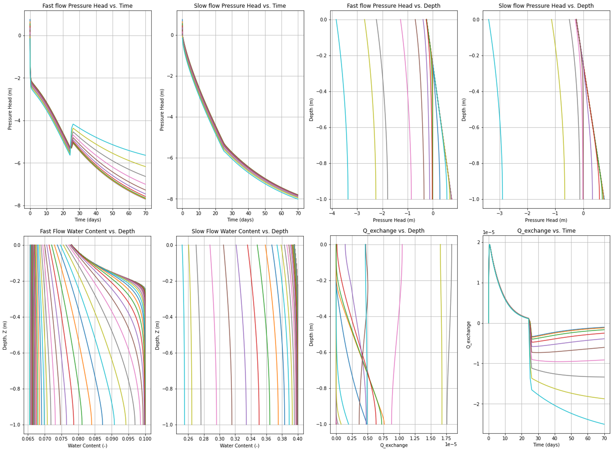Robbin bottom boundary and \(k_{ex}=1.05\times 10^{-5}\) \(m^2/day\)
Notably, the \(k_{ex}\) set at the order of magnitude of \(10^{-5}\) \(m^2/day\)does not alter the results from the scenario with a Robbin bottom boundary and \(k_{ex} = 0\). Looking at the \(Q_{exchange}\) graphs below, it is evident that the external pressure head causes a quick flow through the column and the pressure head gradient quickly drops to zero. After the 25 day mark and over time, \(Q_{exchange}\) becomes increasingly negative signifying the slight preferential flow through the fast flow soil column as it has a higher hydraulic conductivity and there is not enough inflow to sustain a high magnitude of exchange to the slow flow column. After day 25, the pressure head of the fast flow fraction increases above the pressure head of the slow flow fraction.
Gravity flow bottom boundary and \(k_{ex}=1.05\times 10^{-4}\) \(m^2/day\)
This scenario tests the sensitivity of the exchange resistance term by checking the model behavior if the \(k_{ex}\) increases by one order of magnitude. More resistance means that it would be harder to exchange between the soil columns, as exhibited by the graphs below. The flow through the soil columns happens much faster. The pressure head gradient is much smaller between the two soil fractions, so the magnitude of \(Q_{exchange}\) is small, and there is little exchange. Again, the pressure head of the slow flow domain lags behind the fast flow domain, and the flow goes faster through the fast flow zone than the slow flow zone. The bottom boundary of the fast flow domain experiences higher drainage than the slow flow domain.
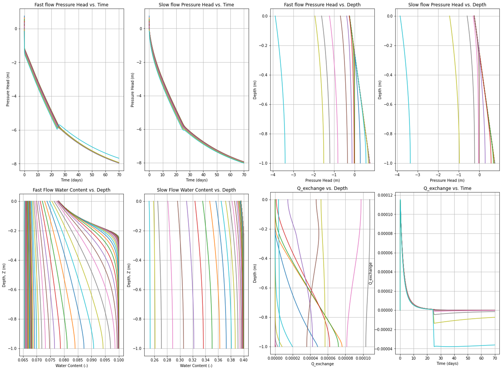Robbin bottom boundary and \(k_{ex}=1.05\times 10^{-4}\) \(m^2/day\)
Again, with the Robbin condition at the bottom boundary, the model behavior does not change compared to the foregoing scenarios with a Robbin bottom boundary. However, in this case, the magnitude of the \(Q_{exchange}\) is even smaller; it, therefore, makes sense that there would not be enough exchange in this case to change the model results.
Robbin.png)
Gravity flow bottom boundary and \(k_{ex}=1.05\times 10^{-5}\) \(m^2/day\) with ponding at the top of the slow flow fraction and a varying top boundary
In this scenario, the top boundary condition for the slow flow fraction is assumed to be the same as the fast flow faction (previously, it was assumed that the flow only entered via the fast flow fraction only). When the flow is too slow at the top boundary of the slow flow fraction, ponding occurs where the additional water flux will create infiltration of water into the soil. The extra infiltration sustains the pressure head in the slow flow column after there is a reversal of the direction of \(Q_{exchange}\) after 25 days. The larger magnitude of the \(Q_{exchange}\) term shows that the pressure gradient is highest in this scenario than the preceding scenarios, indicating more significant exchange between the two soil columns. The ponding allows for the model to continue working even after the soil hits full saturation by switching to the Dirichlet boundary condition. It is evident that in this situation, the pressure head of the slow flow soil fraction still lags behind the fast flow soil fraction. Most of the flow from both the top boundary condition and spillover from the slow flow domain still enters the fast flow domain first as the water flows faster through the fast flow column.
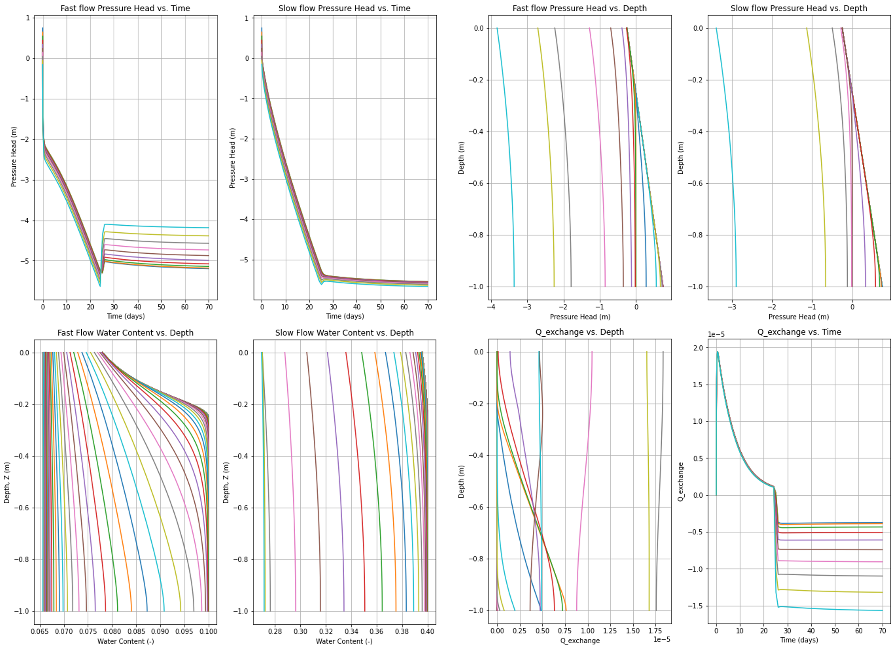When the pressure heads between the two domains are equal, there is no exchange as exhibited by the foregoing scenarios. Therefore, below the depth at which the pressure heads are equal will also be saturated. It is expected that if the inflow of water at the top boundary conditions exceeds the infiltration rate, not only will the soil columns be fully saturated, the water table will also rise. This increases more of the saturated zone. In the next scenario, more inflow will be modeled to examine the effects of higher inflow and potential rise in water table.
Gravity flow bottom boundary and \(k_{ex}=1.05\times 10^{-5}\) \(m^2/day\) with ponding at the top of the slow flow fraction and a varying top boundary with higher inflow
In this scenario, the top boundary condition was doubled, and both the fast and slow flow top boundaries had this inflow condition. As exhibited by the \(Q_{exchange}\) graphs in Figure 10, as time goes by, the depth at which there is no more exchange starts to become increasingly deeper. At the depth where \(Q_{exchange}\) becomes zero and below, there is no exchange because the higher inflow causes the soil to be fully saturated at that depth as the water flows through the soil column. Because there is slow flow in the slow flow domain, ponding occurs which causes the flow to move horizontally to the fast flow domain, as there is too much inflow at the top boundary; this is exhibited by the positive \(Q_{exchange}\) term at the soil layers closer to the top, especially at the beginning of model simulation. As time goes by and as certain soil layers get saturated in the fast flow column, the exchange of flow reverses so that \(Q_{exchange}\) flows from fast to slow flow domains. Moreover, as the flow starts to be insufficient to penetrate to the even deeper layers of the soil, the exchange flow starts to reverse due to the difference in level of saturation between the fast and slow flow domains that changes.
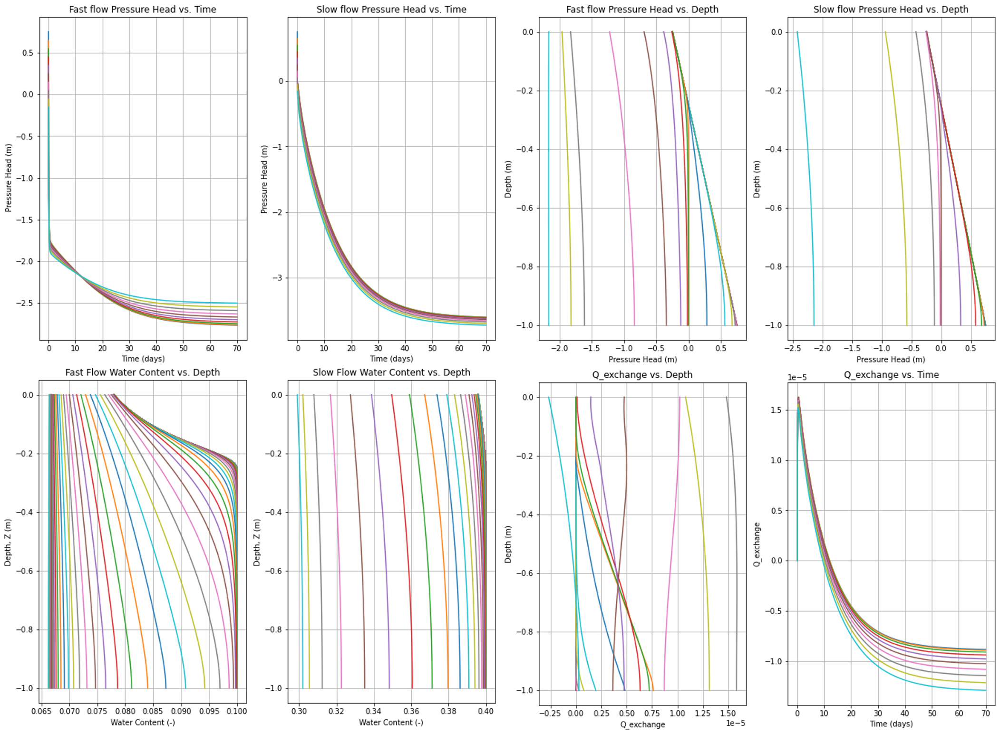The inflow was increased further to see its effects on the coupled process between the two domains. At a higher inflow at the top boundary of the slow flow and fast flow columns, ponding is more severe; therefore, the \(Q_{exchange}\) remains positive for the entire model run. Yet, the flow through the fast column is still faster than the flow through the slow flow column.
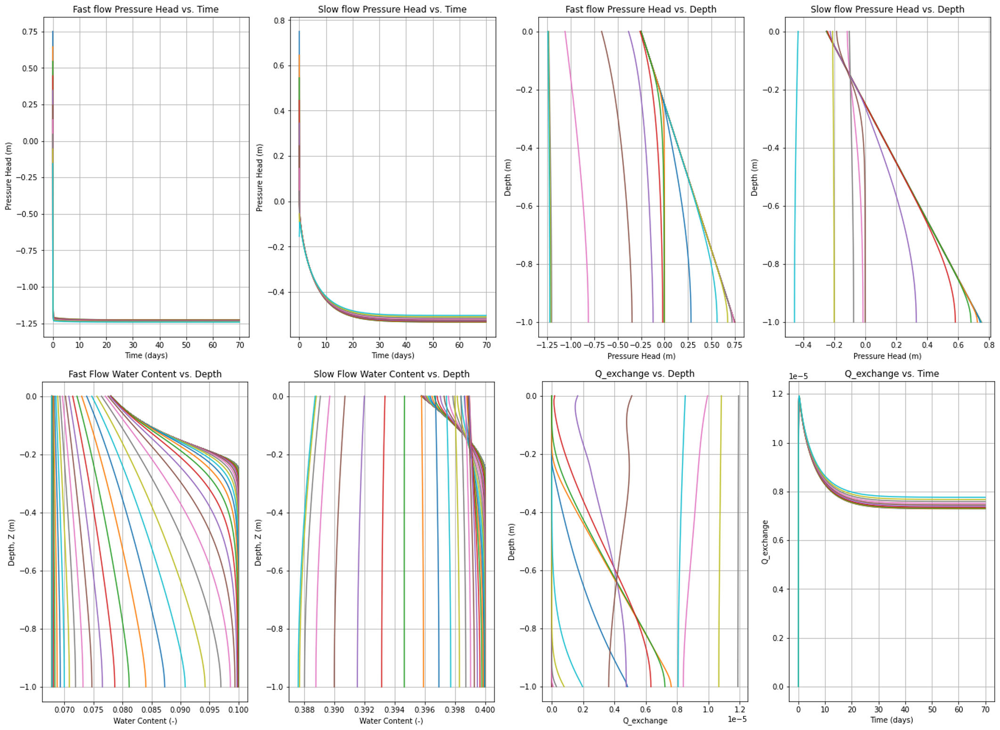Interestingly, if the top boundary of the slow flow domain was set to no flow, the \(Q_{exchange}\) term becomes negative over time, as there is exchange from the fast flow domain to the slow flow domain because the fast flow domain is more saturated.
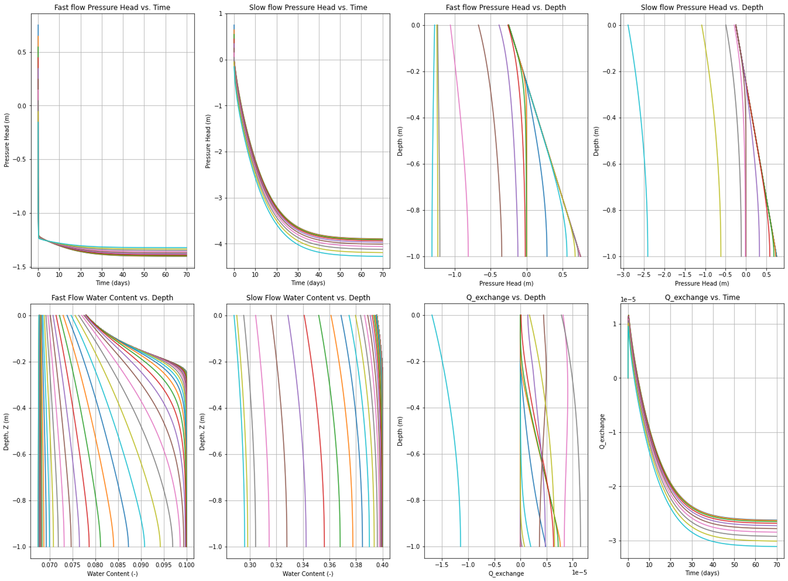Conclusion
Preferential flow is driven by the difference in volume of flow through the fast flow and slow flow columns as well as the differences in soil properties. With varying top boundary conditions, most of the flow still enters through the fast flow soil domain. Therefore, it is a safe assumption to model no flow through the top boundary of the slow flow soil fraction. The resistance term in the \(Q_{exchange}\) term governs the exchange of flow between the two soil columns; the higher the resistance, the less exchange there is. Changes in the \(Q_{exchange}\) term depend on the level of saturation of both the fast and slow flow domains; this relation is what couples the process of unsaturated flow between the dual porosity soil domains. Because of the different soil properties between the two soil fractions, preferential flow can be observed as the water flows faster through the coarser fraction than the finer fraction, making the residual water content in the slow flow fraction higher than in the slow flow fraction. The pressure head of the slow flow domain lags behind the pressure head of the fast flow domain; the difference in pressure head between the two domains will impact the exchange. Preferential flow is also influenced by the boundary conditions; with a high external head at the bottom boundary, the flow through the columns might be too fast for there to be any sufficient exchange or the external head could influence the flow rate. Also, with a large inflow and ponding occurring at the top of the slow flow domain, the flow will move laterally to the fast flow domain. Overall, the cracks in the soil within the fast flow region imply that the porosity of the fast flow domain is higher; moreover, the permeability is higher which makes water prefer the flow through the fast flow domain.
Future Extensions of the Model
This model could be extended to further study the effects of coupled processes in preferential flow. This model assumes that the soil parameters do not change with different depths, temperature, or density. Making these parameters change concerning different environmental conditions will help study the coupled process under varying conditions. Additionally, changing the boundary conditions to observe how the model behaves differently could provide valuable insights.
Other processes could be incorporated, such as root water uptake, to further extend the model. Including meteorological data could simulate real-life situations with changing unsaturated flow due to different inflow rates of water. Extending the model to include these scenarios will provide deeper insight into the effects of the dual porosity system.
Appendix
To ensure the model used was set up correctly, the extension of the unsaturated flow model was done in a step-wise fashion. The results of the extension are shown below. First, both the fast and slow soil fractions were set to the same soil parameters which was sand according to the parameters denoted in Mayer (2005) who cited Carsel & Parrish (1988).
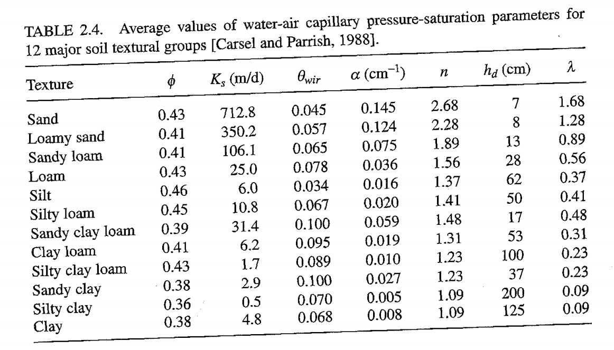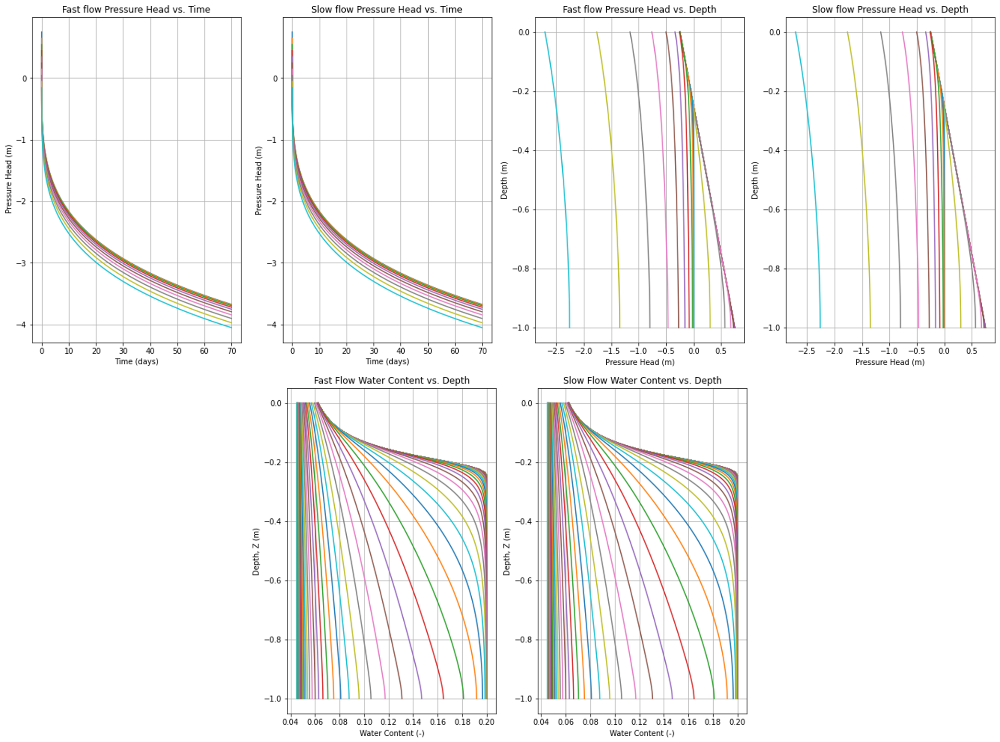
Figures 14 and 15 show the results of the model when the bottom boundary condition was gravity flow and the Robbin condition, respectively, and both slow and fast fractions had the same soil conditions, no exchange, and equal partition between the two soil fractions. These graphs match the unsaturated flow model.
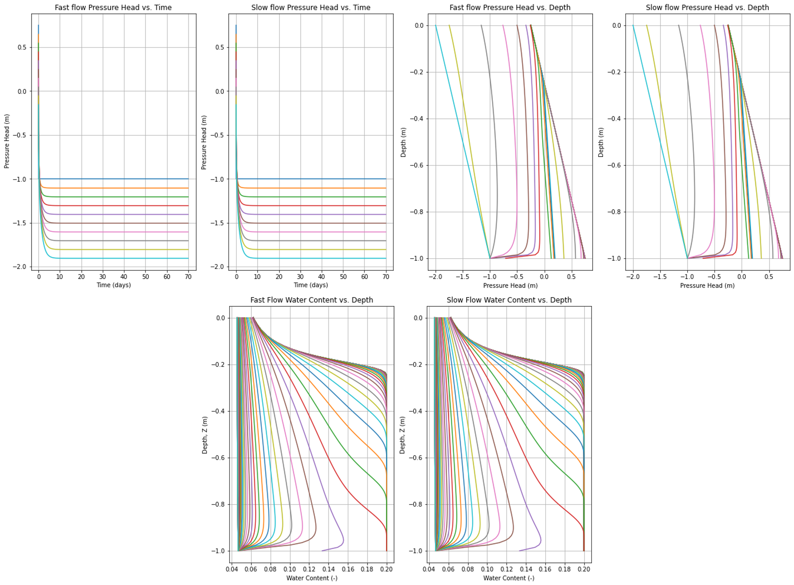Then, the top boundary condition was varied to -0.001 m/day of flow in the first 25 days, then zero flow for the next 200 days. Again, these results match the results from the unsaturated flow model, as shown in Figures 16 and 17.
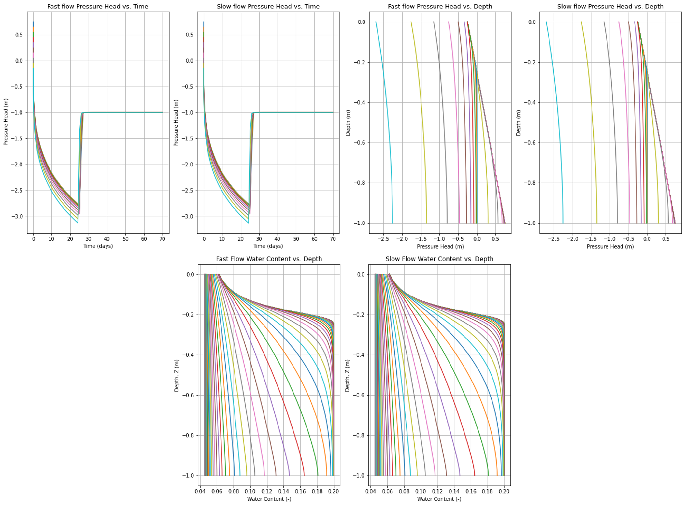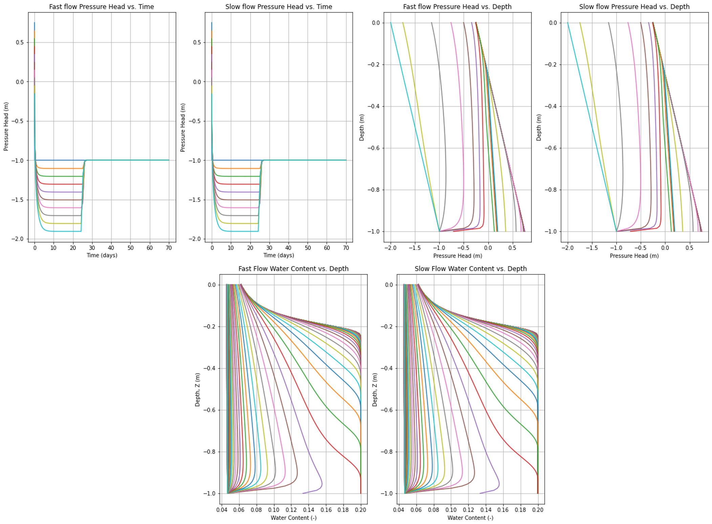
The code was then tested to ensure that \(\beta\) appropriately partitions the flow by volume between the two soil fractions. Figures 18 and 19 show the results of the model when \(\beta = 0.2\), as this parameter which is the fraction of porosity associated with the fast flow is typically between 2-30%.
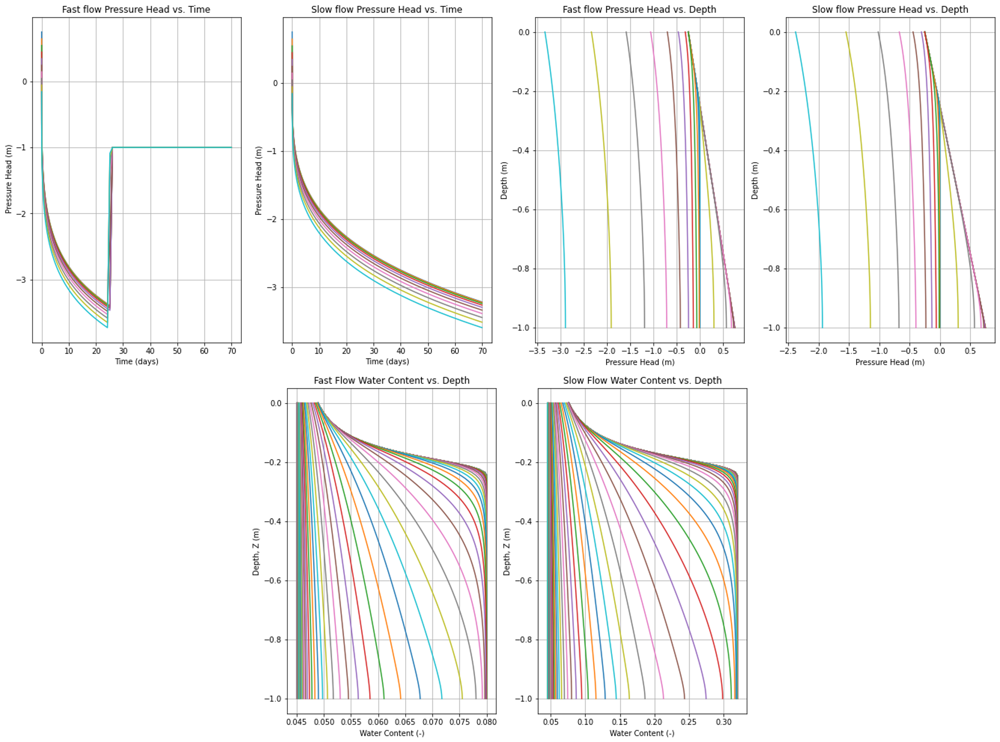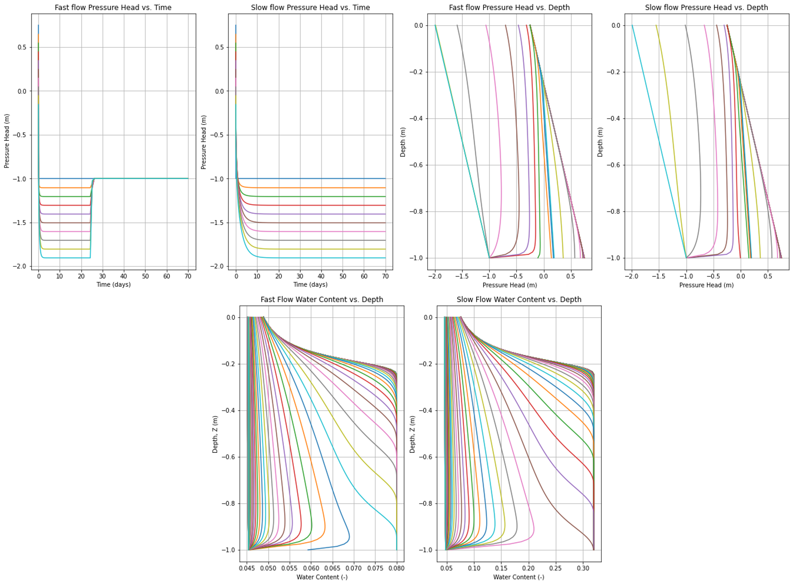
The behavior of these graphs was as expected, and therefore the test scenarios could be modeled using this Python code.
Figures 20, 21, and 22 show the sensitivity of changing soil parameters on the model behavior.
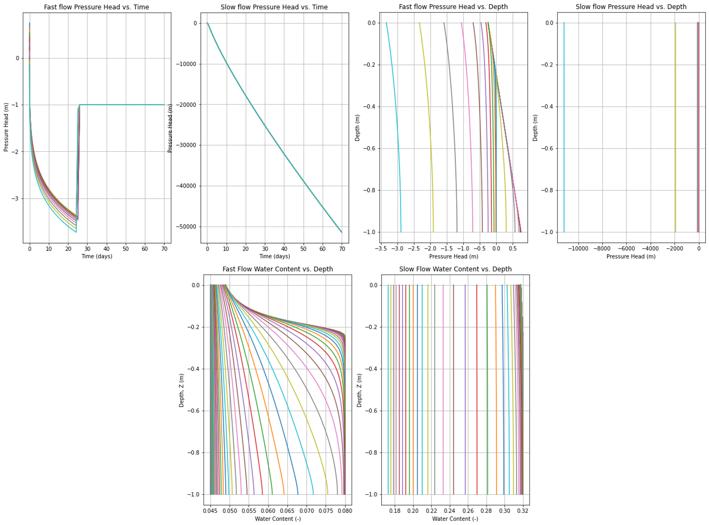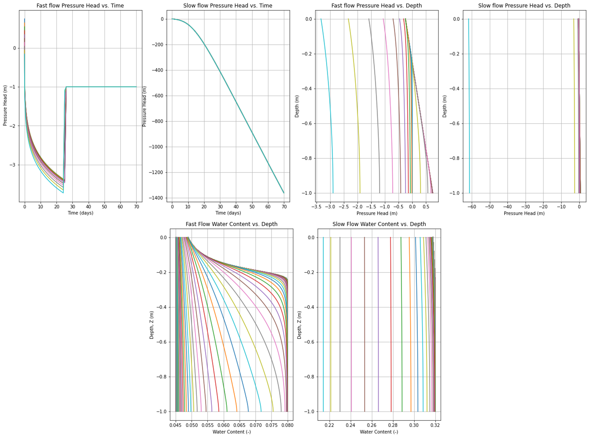
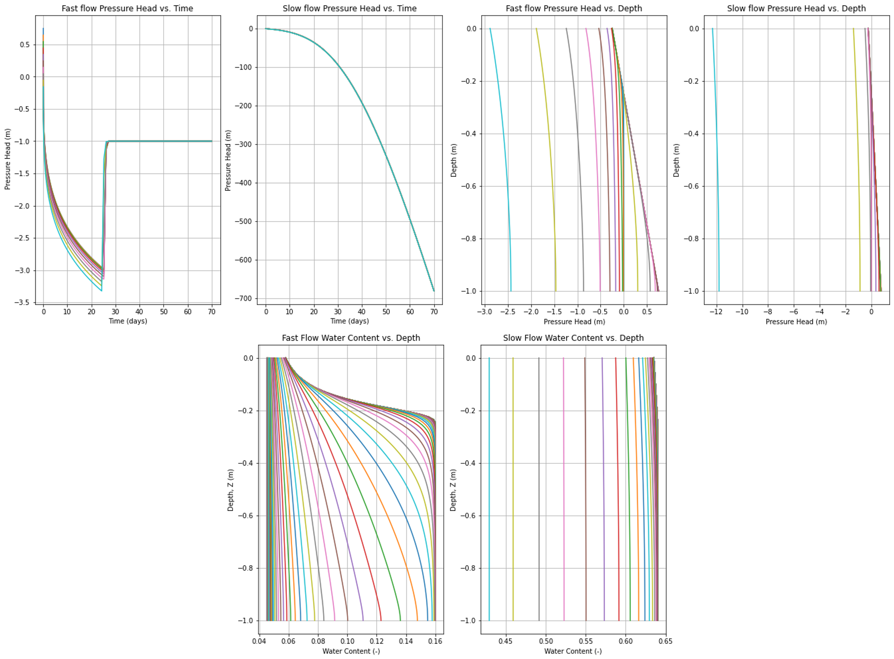
References
Cornell University. (2021). Why preferential flow is important? Retrieved June 9, 2021, from http://soilandwater.bee.cornell.edu/research/pfweb/educators/intro/why.htm
Gerke, H. H., & Van Genuchten, M. T. (1993). A dual-porosity model for simulating the preferential movement of water and solutes in structured porous media. Water resources research, 29(2), 305–319.
Mayer, A. S. (2005). Soil and groundwater contamination: Nonaqueous phase liquids. American Geophysical Union.
Pinder, G. F., & Celia, M. A. (2006). Subsurface hydrology. John Wiley & Sons.